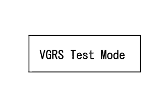
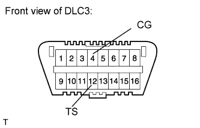

VARIABLE GEAR RATIO STEERING SYSTEM > TEST MODE PROCEDURE |
| TEST MODE (VGRS SENSOR SIGNAL CHECK) |
 |
Check the test mode DTCs (using the tester).
Turn the engine switch off.
Connect the intelligent tester to the DLC3.
Turn the engine switch on (IG) and turn the tester on.
Read the test mode DTCs by following the prompts on the tester screen.
Clear the test mode DTCs (using the tester).
Turn the engine switch off.
Connect the intelligent tester to the DLC3.
Turn the engine switch on (IG) and turn the tester on.
Switch the system from test mode to normal mode by following the directions on the tester screen.
Check the test mode DTCs (using SST check wire).
Turn the engine switch off.
 |
Using SST, connect terminals 12 (TS) and 4 (CG) of the DLC3.
Turn the engine switch on (IG).
Read 2-digit test mode DTCs from the multi-information display.
Clear the test mode DTCs (using SST check wire).
Turn the engine switch off.
Disconnect SST from the DLC3.
Turn the engine switch on (IG).
| TEST MODE DTC |
If a trouble code is displayed during the DTC check, check the circuit indicated by the DTC. For details of each code, proceed to the DTC chart.
| DTC Code | Detection Item | Trouble Area | Proceed to |
| C15C4/68 | A steering signal indicating a tire angle of 36° or more (to the left or right) is input after entering test mode* |
|
Click here
|
| C15C5/69 | A steering signal indicating a motor rotation angle of 36° or more (to the left or right) is input after entering test mode* |
|
Click here
|